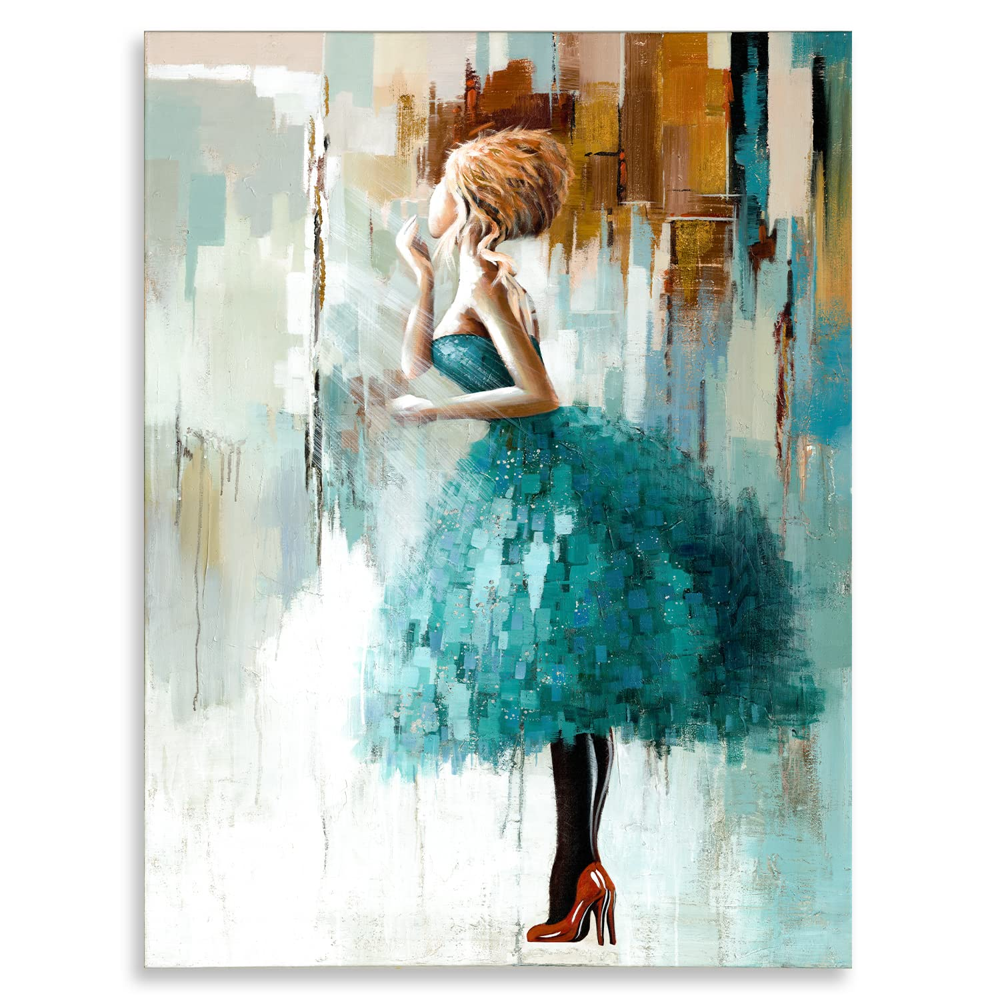
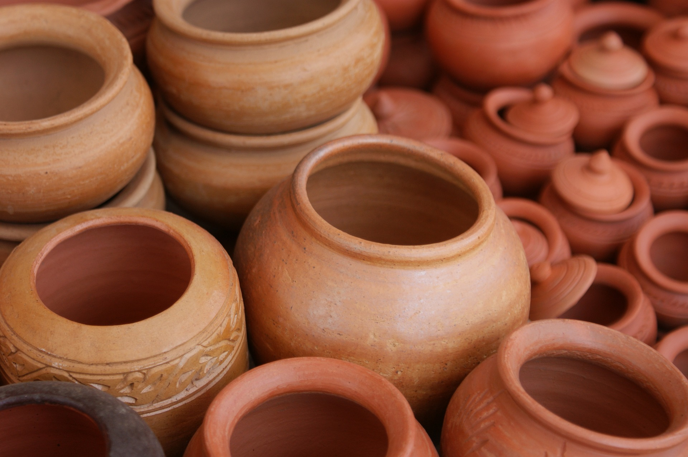

Art Friends
Traditional Arts

Traditional Drawing
Traditional drawings were monochrome, or at least had little colour, while modern colored-pencil drawings may approach or cross a boundary between drawing and painting.

Traditional Painting
Traditional painting is a kind of painting that shows the origin of a certain thing, place or people or you can also call as their culture.
Calligraphy
It involves the correct formation of characters, the ordering of the various parts, and the harmony of proportions.

Pottery
Pottery is the process and the products of forming vessels and other objects with clay and other ceramic materials, which are fired at high temperatures to give them a hard, durable form.